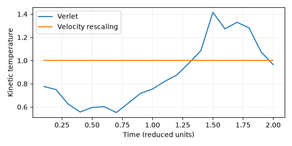
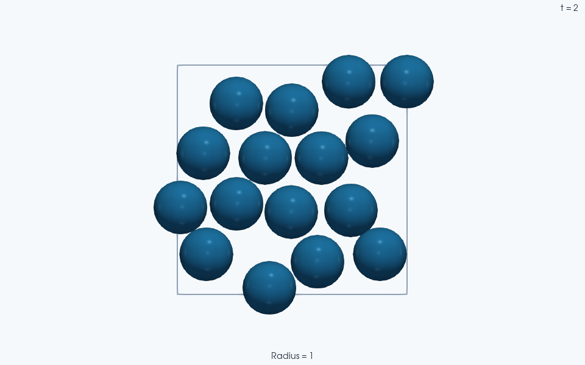

Note
Go to the end to download the full example code.
Temperature and density control#
This script runs the same physical scenario twice to show the two independent control axes in JaxDEM:
Temperature control is a choice of integrator. Picking
linear_integrator_type="verlet_rescaling"atSystem.createtime clamps the kinetic temperature to a fixed value on a configurable cadence. Picking"verlet"lets temperature float.Density / box control is a protocol on top of whatever integrator you chose.
run_packing_fraction_protocol()integrates viasystem.stepin chunks and callsscale_to_packing_fraction()on a user-supplied per-frame schedule.
We impose a single-period sinusoidal modulation of the packing fraction and compare:
bare Verlet + phi modulation — kinetic temperature is free to change as particles interact and the protocol does work on the system.
velocity-rescaling Verlet + phi modulation — temperature stays clamped while phi oscillates. Rescaling controls kinetic temperature; it is not an energy-conserving integrator or a pressure-control algorithm.
The small, 1,000-step run illustrates the API and sampled temperature control. It is too short to establish a reversible thermodynamic cycle. Lengths, masses, stiffness and Boltzmann’s constant use reduced units.
Imports
import jax
import jax.numpy as jnp
import numpy as np
jax.config.update("jax_enable_x64", True) # type: ignore[no-untyped-call]
import jaxdem as jdem
from jaxdem.utils.dynamics_routines import run_packing_fraction_protocol
from jaxdem.utils.packing_utils import compute_packing_fraction
from jaxdem.utils.thermal import (
compute_potential_energy,
compute_temperature,
set_temperature,
)
Temperature, packing fraction, and rescaling#
For these smooth disks, with no fixed particles or rotational degrees of freedom, the kinetic temperature is defined by
set_temperature removes center-of-mass drift here; subtract_drift=True
consistently removes those d degrees of freedom from the temperature
count. A nonzero bulk flow would need to be removed before interpreting this
kinetic energy as thermal motion. The present periodic run has zero initial
drift and no imposed streaming velocity.
At each thermostat event, velocity rescaling multiplies free velocities by \(\sqrt{T_{\rm target}/T}\). This fixes the sampled kinetic temperature; it does not by itself generate the fluctuations of a canonical ensemble. Rotations would require a consistent rotational degree-of-freedom count and thermostat choice; they are disabled for this smooth-sphere lesson.
The geometric packing fraction is independent of temperature:
The protocol rescales the box and particle centers while retaining radii.
Decreasing lambda compresses the packing. This imposed coordinate change
can alter contact energy without altering velocities at that instant, so
subsequent interactions exchange kinetic and potential energy. Density
control is therefore an external protocol, not a barostat that responds to
a measured pressure.
Parameters
N = 16
phi0 = 0.70
dim = 2
dt = 2e-3
young = 1_000.0
initial_temperature = 1.0
phi_amplitude = -0.05 # one sinusoidal density cycle over the complete run
n_steps = 1_000
save_stride = 50 # align sampling with the thermostat's rescaling cadence
n_frames = n_steps // save_stride
can_rotate = False # smooth spheres, no rotation DOF
subtract_drift = True
seed = 0
Precompute the phi schedule#
The target is a discrete sampling of
\(\phi(t)=\phi_0+A\sin(2\pi t/t_{\rm run})\). The first saved target is
at t=save_stride*dt rather than at zero. Each frame is stored after its
integration interval and box rescaling, so the measured fraction should
match that frame’s target. Sampling every 50 steps also coincides with the
thermostat cadence; temperature can vary between the displayed samples.
One phi value per saved frame. Each frame covers save_stride steps.
After each frame, the protocol rescales the box to the frame’s target phi.
t_frac = (1 + np.arange(n_frames)) / n_frames # (0, 1]
phi_at_frames = phi0 + phi_amplitude * np.sin(2.0 * np.pi * t_frac)
strides = np.full(n_frames, save_stride, dtype=int)
System builder — two variants differ only in the linear integrator choice.
For the one-call equivalent see
build_sphere_system()
(sphere_construction example).
def build_state_system(linear_integrator_type, linear_integrator_kw=None):
# Mono-disperse spheres of radius 1.0. The ratio lists are relative and
# normalize away. Only ``small_radius`` sets the absolute scale.
particle_radii = jdem.utils.dispersity.get_polydisperse_radii(
N, [1.0], [1.0], small_radius=1.0
)
# A nonoverlapping 4x4 grid gives both variants the same initial geometry
# without an expensive packing search. Random thermal velocities then
# create contacts; initial temperature need not equal an equilibrium value.
side = jnp.sqrt(jnp.sum(jnp.pi * particle_radii**2) / phi0)
axis = (jnp.arange(4) + 0.5) * side / 4
x, y = jnp.meshgrid(axis, axis, indexing="ij")
pos = jnp.stack((x.ravel(), y.ravel()), axis=-1)
box_size = jnp.full(2, side)
state = jdem.State.create(pos=pos, rad=particle_radii, mass=jnp.ones(N))
state = set_temperature(
state,
initial_temperature,
can_rotate=can_rotate,
subtract_drift=subtract_drift,
seed=seed,
)
# Stiff contacts keep the visible overlaps small. Resolve the shorter
# contact timescale with dt=0.002; density and temperature controls are
# otherwise identical between the two runs.
mats = [jdem.Material.create("elastic", young=young, poisson=0.5, density=1.0)]
mat_table = jdem.MaterialTable.from_materials(
mats, matcher=jdem.MaterialMatchmaker.create("harmonic")
)
system = jdem.System.create(
state_shape=state.shape,
dt=dt,
linear_integrator_type=linear_integrator_type,
linear_integrator_kw=linear_integrator_kw or {},
rotation_integrator_type=None,
domain_type="periodic",
force_model_type="spring",
collider_type="naive",
mat_table=mat_table,
domain_kw={"box_size": box_size},
)
return jdem.System.initialize(state, system)
def summarize(label, traj_state, traj_system):
temperature = jax.vmap(
lambda s: compute_temperature(
s, can_rotate=can_rotate, subtract_drift=subtract_drift
)
)(traj_state)
phi_series = jax.vmap(compute_packing_fraction)(traj_state, traj_system)
pe = jax.vmap(compute_potential_energy)(traj_state, traj_system)
T_arr = np.asarray(temperature)
phi_arr = np.asarray(phi_series)
pe_arr = np.asarray(pe)
print(
f"[{label}] T: min={T_arr.min():.3e} max={T_arr.max():.3e} mean={T_arr.mean():.3e} "
f"phi: min={phi_arr.min():.4f} max={phi_arr.max():.4f} "
f"PE mean={pe_arr.mean():.3e}"
)
np.testing.assert_allclose(phi_arr, phi_at_frames, rtol=1e-12)
if label == "verlet_rescaling":
np.testing.assert_allclose(T_arr, initial_temperature, rtol=1e-10)
print(" frame phi T")
for i in (0, n_frames // 4, n_frames // 2, 3 * n_frames // 4, n_frames - 1):
print(f" {i:3d} {phi_arr[i]:.4f} {T_arr[i]:.4f}")
return T_arr, phi_arr
Bare Verlet + phi modulation: temperature is free to fluctuate.
state, system = build_state_system("verlet")
state, system, (traj_state, traj_system) = run_packing_fraction_protocol(
state,
system,
strides=strides,
phi_at_frames=phi_at_frames,
)
bare_temperature, _ = summarize("bare verlet", traj_state, traj_system)
[bare verlet] T: min=5.520e-01 max=1.415e+00 mean=8.826e-01 phi: min=0.6500 max=0.7500 PE mean=2.014e+00
frame phi T
0 0.6845 0.7766
5 0.6524 0.6023
10 0.7155 0.8198
15 0.7476 1.2726
19 0.7000 0.9651
2) verlet_rescaling thermostat + phi modulation: temperature clamped.
linear_integrator_kw takes plain Python values. The system forwards
them to Create().
state, system = build_state_system(
"verlet_rescaling",
linear_integrator_kw=dict(
temperature=initial_temperature,
rescale_every=50,
can_rotate=can_rotate,
subtract_drift=subtract_drift,
k_B=1.0,
),
)
state, system, (traj_state, traj_system) = run_packing_fraction_protocol(
state,
system,
strides=strides,
phi_at_frames=phi_at_frames,
)
controlled_temperature, _ = summarize("verlet_rescaling", traj_state, traj_system)
[verlet_rescaling] T: min=1.000e+00 max=1.000e+00 mean=1.000e+00 phi: min=0.6500 max=0.7500 PE mean=3.443e+00
frame phi T
0 0.6845 1.0000
5 0.6524 1.0000
10 0.7155 1.0000
15 0.7476 1.0000
19 0.7000 1.0000
Compare the sampled histories. The protocol changes positions and box size after each integration chunk, leaving velocities unchanged. Kinetic temperature therefore responds through subsequent interactions, with no guaranteed monotonic or in-phase relationship to the density schedule.
import matplotlib.pyplot as plt
time = np.cumsum(strides) * dt
fig, axis = plt.subplots(figsize=(6, 3))
axis.plot(time, bare_temperature, label="Verlet")
axis.plot(time, controlled_temperature, label="Velocity rescaling")
axis.set(xlabel="Time (reduced units)", ylabel="Kinetic temperature")
axis.legend()
axis.grid(alpha=0.2)
fig.tight_layout()


ParaView rendering of this run’s VTKWriter output.
Total running time of the script: (0 minutes 14.163 seconds)